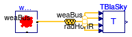

This package contains examples for the use of models that can be found in Buildings.BoundaryConditions.SkyTemperature.
Extends from Modelica.Icons.ExamplesPackage (Icon for packages containing runnable examples).
| Name | Description |
|---|---|
| Test model for black body sky temperature |
 Buildings.BoundaryConditions.SkyTemperature.Examples.BlackBody
Buildings.BoundaryConditions.SkyTemperature.Examples.BlackBody
| Type | Name | Description |
|---|---|---|
| Bus | weaBus |
model BlackBody "Test model for black body sky temperature" extends Modelica.Icons.Example; import Buildings;Buildings.BoundaryConditions.WeatherData.ReaderTMY3 weaDat(filNam= "Resources/weatherdata/USA_IL_Chicago-OHare.Intl.AP.725300_TMY3.mos"); Buildings.BoundaryConditions.SkyTemperature.BlackBody TBlaSky; Buildings.BoundaryConditions.WeatherData.Bus weaBus; equationconnect(weaBus, weaDat.weaBus); connect(weaBus.TDewPoi, TBlaSky.TDewPoi); connect(weaBus.nOpa, TBlaSky.nOpa); connect(weaBus.TDryBul, TBlaSky.TDryBul); connect(weaBus.radHorIR, TBlaSky.radHorIR); end BlackBody;